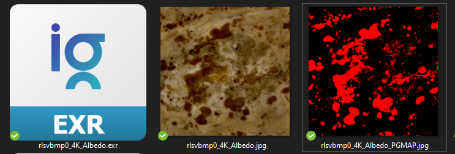

Pointer's Gamut Checker CommandLineTool¶
[PG will be used as an acronym for Pointer's Gamut]
This tool allow you to check if the pixels color values of a given image are in the Pointer's Gamut or not.
This is a command line tool so it means no interface to interract with. Please refer to the startguide for having an explanation of how to use it if you never used CLI(command lien interface).
The outputed result is an image of the same size as the original whith red pixel respresenting the out-of-gamut ones and black the one in the PG.

What is the Pointer's Gamut ?
The Pointer’s gamut is (an approximation of) the gamut of real surface colors as can be seen by the human eye, based on the research by Michael R. Pointer (1980). What this means is that every color that can be reflected by the surface of an object of any material is inside the Pointer’s gamut.
Pointer’s gamut is defined for diffuse reflection (matte surface)
-- from https://www.tftcentral.co.uk/articles/pointers_gamut.htm
CONTRIBUTORS¶
Development made possible thanks to
- ColorScience Package
- Fredrik Averpil's and Sidney Guenther's work
- Material Design Icons
- OpenImage IO
- Thibault Houdon Formations
- Chris Brejon that introduce me the idea of this tool and provided me an awesome support and documentation.